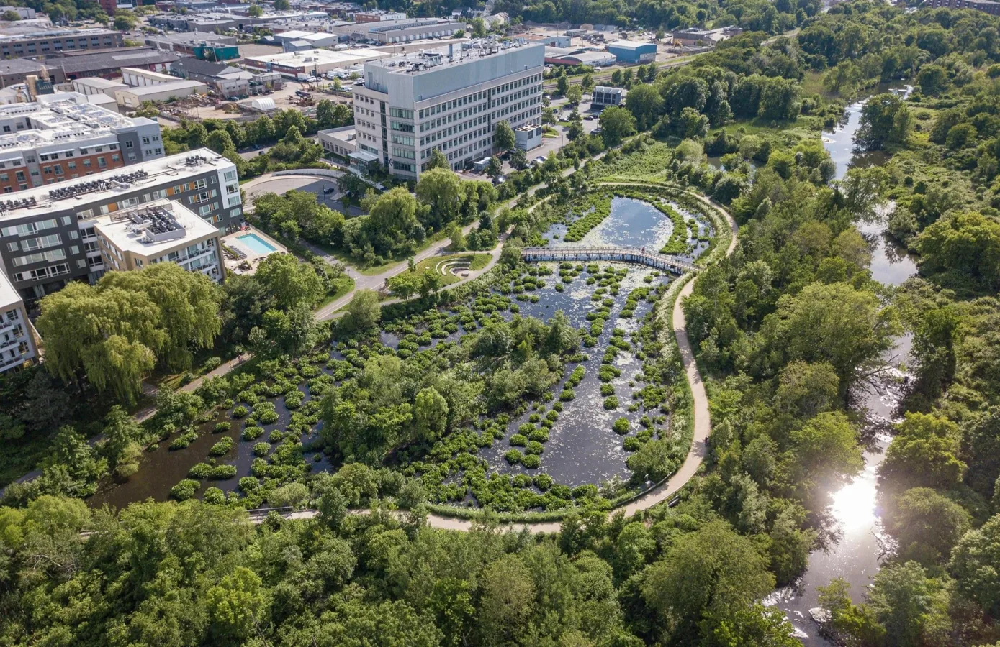

← All research areasHYDROEXLAB / RESEARCH
Flood Mitigation and Stormwater Management
Developing Research Direction
Exploring approaches to reduce flood impacts and manage stormwater.

Overview
HydroExLab is developing research on flood mitigation and stormwater management, with an emphasis on understanding flood hazards and evaluating broad approaches to reducing flood impacts in urban and developed environments.